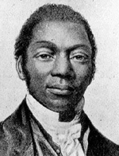

|

|

|
|
|
Noted abolitionist James Pembroke was born into slavery in Queen
Anne's County, Maryland. As he grew up under the oversight of an
especially harsh master, he became an expert blacksmith and taught
himself to read, write and calculate. In 1827, Pembroke escaped slavery
via the Underground Railroad, and was taken in by a Quaker family in
Pennsylvania. He spent nearly three years in their employ, all the while
continuing his education. In 1830, he traveled to King County, New York,
where he took the name James W.C. Pennington (The 'W.C.' did not stand for anything).
Over the course of the next three decades, Pennington achieved
success in three different careers. He was a minister, serving as pastor
of several different churches. Pennington was also an educator. He
worked as a teacher for several years, and in 1841 he wrote A
Textbook of the Origin and History of Colored People, one of the
earliest books written on African-American history. The book emphasized
the importance of black Americans' African heritage, and denounced the
common stereotypes of the day.
Pennington's chief fame, however, came from his work as an
abolitionist. As early as 1831, be became known for his outspoken
criticism of the American Colonization Society. By the mid-1830s,
Pennington was working with the nation's most well known abolitionists.
Among his close friends was Frederick Douglass, at whose wedding
Pennington officiated in 1838. Pennington attended several important
gatherings of abolitionist leaders, including the Philadelphia Negro
Convention in 1832 and the World Anti-Slavery Conference in 1843. In
1849, Pennington made his single most important contribution to the
abolition movement, penning an autobiography entitled The Fugitive
Blacksmith. The work was a powerful condemnation of slavery, and
quickly went through several printings. For most of the 1850s,
Pennington traveled throughout the United States and Europe delivering
anti-slavery speeches.
The publication of The Fugitive Blacksmith marked the high
point of Pennington's career. Shortly before the Civil War started,
Pennington's struggles with alcoholism were made public, and his
reputation was destroyed. He struggled to support himself during the
war, suffering a series of indignities that included being jailed for
allegedly stealing a book. He died penniless in Jacksonville, Florida, a
few years after the war ended.
Source: Joan Waugh, ed., Facts on File Encyclopedia of American
History: Civil War and Reconstruction, 1856 to 1869 (New York: Facts on
File, 2003), 270.
|